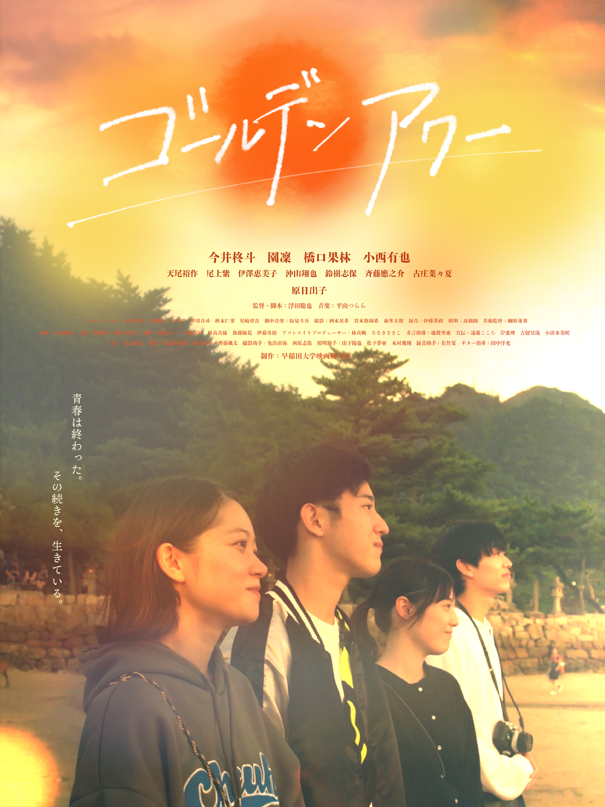
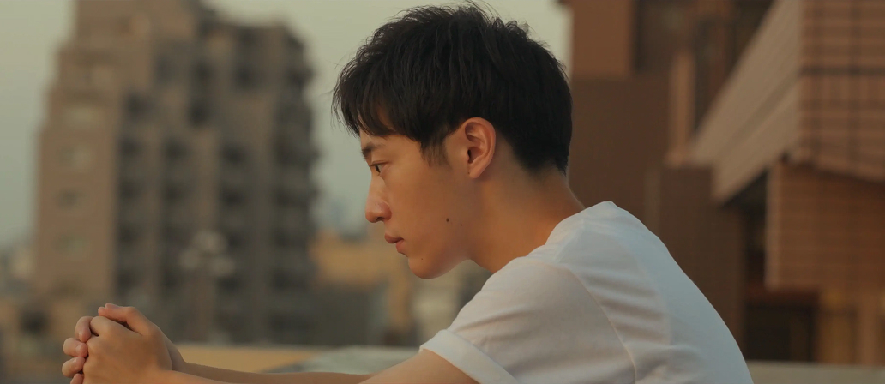
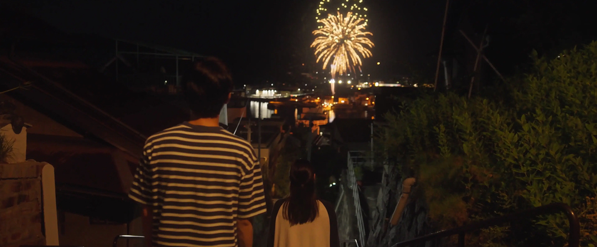
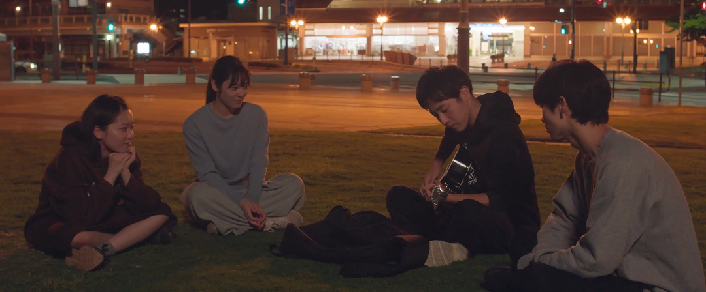
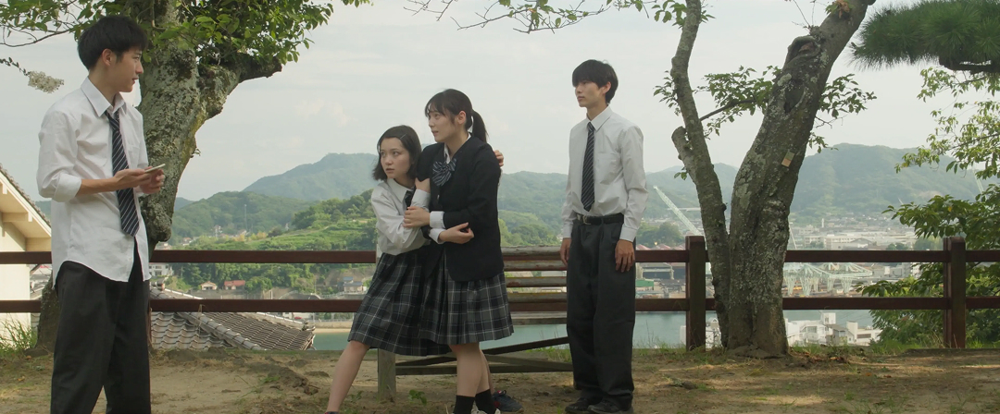
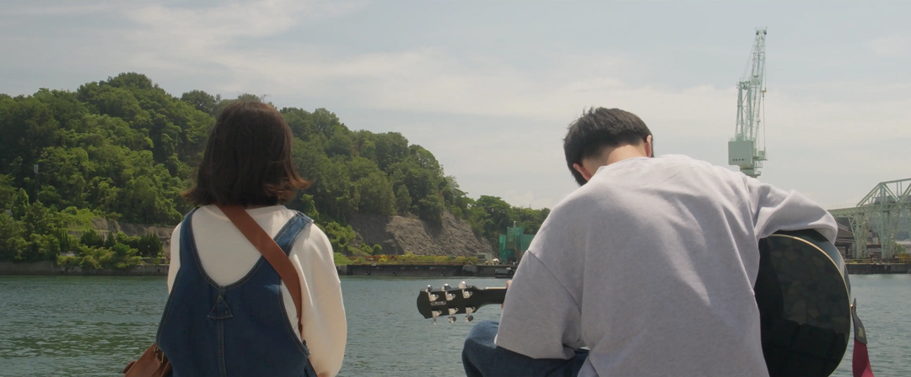
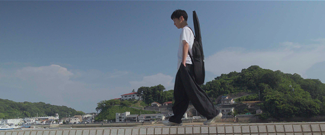

9月13日13時30分から広島県尾道市のシネマ尾道で公開。
予告映像を公開しました。
完成披露試写会を行いました。
予告映像・本ビジュアルを公開しました。
売れないシンガーソングライターの春興将人（今井柊斗）が謎の死を遂げた。
彼の地元・広島県尾道市で葬儀が執り行われる。
葬儀の為に集まった高校時代の親友の青山恋（小西有也）、一ノ瀬四葉（橋口果林）と八村楓（園凜）。
一生続くと思っていたその絆は儚く消え去り、10年。
夢を追った彼はなぜ亡くなったのか。
そして、真実を知った3人は、自らの過去とどう向き合うのか。
過去と現実が交錯する人間ドラマ。
人生の中で、大切な誰かにきちんと別れを告げ、それぞれの道へ歩き出せる人は、どれくらいいるのでしょうか。 本作に登場する4人の主人公たちは、10年という時間の中でバラバラになってしまいました。しかし、別れもあれば、ひょんなことで再び巡り逢うのも人生です。 その巡り逢わせは、残念ながら一人の死によって起こってしまいます。 交わらなかった10年の先で、彼らは再び交差できるのか。 10代最後の作品として、とても大切な作品が完成しました。 どうかこの作品が、皆様の心に残るものでありますように
今井柊斗（いまいしゅうと）
2005年1月27日生まれ、北海道出身。
2001年1月11日生まれ、大阪府出身。
2000年1月6日生まれ、宮城県出身。
2001年1月11日生まれ、大阪府出身。
今井柊斗（いまいしゅうと）
2005年1月27日生まれ、北海道出身。
園凜（そのりん）
俳優、モデル、ラジオ「知らねえ単語」出演
2000年1月6日生まれ、宮城県出身。
園凛（そのりん）
俳優、モデル、ラジオ「知らねえ単語」制作・出演
「ゴールデンアワー」監督
2005年生まれ、大阪府出身
早稲田大学国際教養学部に在学する傍ら、BABEL LABEL 2045に所属
音楽：平山つらら プロデューサー：山本祥太 越眞里亜
助監督：宮下桜 伊川真尋 樫本仁菜 尾崎碧音
劇中音楽：塩見斗吾
撮影：酒本晃希 岩本悠羽希 林隼太朗 録音：伊藤英政
照明：髙橋陸 グラフィックデザイナー：柳原蓮香
アートディレクター：小枝優月 衣裳：渡邉碧 柳川宝佳良
制作：渡邉あい 斉藤泰河 日高真優 後藤優花
アソシエイトプロデューサー：林真帆 ななきささこ
宣伝：遠藤こころ 岸愛理 吉留昊琉 整音：鴨志田知花
整音助手：齊藤颯太 VFX：米倉誠
撮影助手：免出直弥 西原志保
照明助手：山下陽也 松下夢亜 木村飛翔
録音助手：佐竹栞 ギター指導：田中洋充
制作：ゴールデンアワー製作委員会





